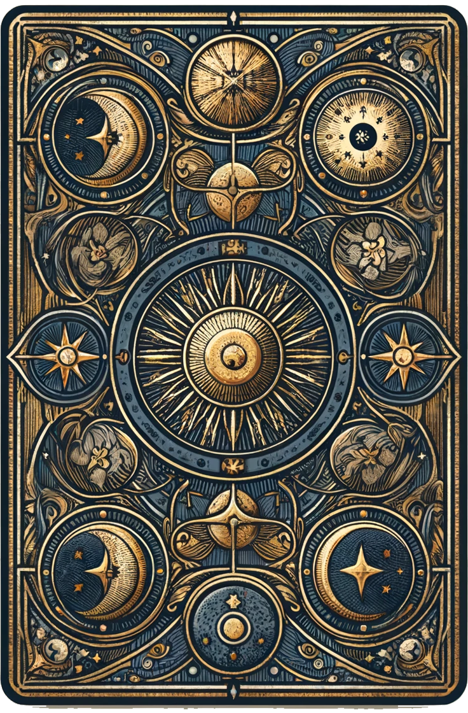

사주
전체 사주 메뉴
평생사주
월별사주
오늘의 운세
연애운
내 사주의 부족한 점
내 사주의 인기도
사주에 맞는 직업
사주 궁합
신년 운세
별자리 운세
별자리 운세
타로
전체 타로 메뉴
이번주 타로 운세
이번달 타로 운세
연애 타로
재회 타로
취업 타로
소원 타로
사주
평생사주
월별사주
오늘의 운세
연애운
내 사주의 부족한 점
내 사주의 인기도
사주에 맞는 직업
사주 궁합
신년운세
별자리 운세
타로
이번주 타로 운세
이번달 타로 운세
연애 타로
재회 타로
취업 타로
소원 타로
이번 달 타로운세

타로 카드를 선택해 결과를 확인하세요.
이 카드 확인하기
다시 선택하기